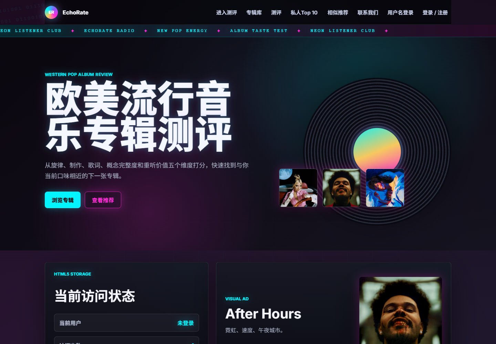
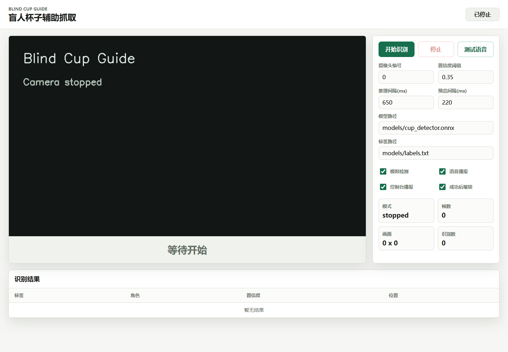

王沁扬 · Projects
视觉交互、机器人、触觉反馈与 Web 应用。点开任一项目查看介绍、截图与代码。

EchoRate
欧美流行专辑测评网站
Explore albums with taste quizzes, tag-based recommendations, and a personal Top 10.

RiderSense
后方来车触觉提醒研究原型
See behind you. Feel where attention is needed. Rear-view video turned into directional haptic cues.

Blind Cup Guide
视障辅助抓杯原型
Cup-reaching assistance prototype with ONNX cup and hand detection and Chinese voice guidance.

Fire Rescue Car
仓库消防救援巡检小车
Raspberry Pi fire patrol robot with line following, obstacle avoidance, visual detection and a web dashboard.

Hangzhou Metro Ticketing
杭州地铁自助购票模拟器
Java Swing metro ticketing simulator with station selection, fares, simulated payment and change.